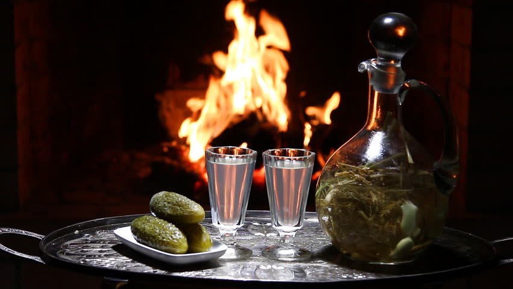
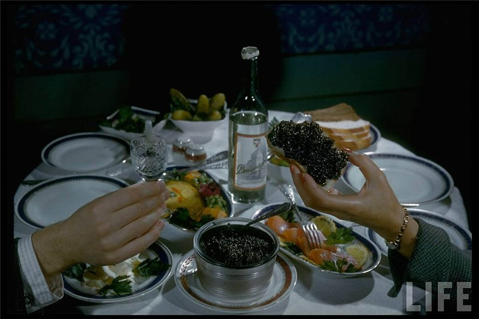

Как е правилно да се пие водка?
 Преди всичко – никога не слагайте лед! Водката се пие силно охладена (час във фризера, не по-малко, и изстудената водка става гъста, почти като глицерин) от специално охладени чашки – малка, тип шотче (стопка) от 50 мл, или по-голяма, със столче (лафитник) от 70 мл. И така, вземаме в лявата ръка вилицата с набодено на нея традиционно мезе – осолена гъба или кисела краставичка (стават и мариновани), а в дясната – чашата с ледената водка… Задължително се пие на екс – и незабавно се замезва. За мезе става и солена риба – вижте нашия материал за най-добрите мезета за водка. В устата пари, в гърлото е огън, а животът вече не изглежда така трагичен. Тя не се пие без повод, а само ритуално, непременно по време на руските помени. Впрочем, също и на сватбите… В приличен ресторант с руска кухня, освен т.нар. бяла, без добавки, водка в менюто, обезателно трябва да има алкохолни настойки и сладки ликьори. Настойките се правят на основата на водката от разни ароматни продукти без да се добавя захар. Най-разпространеният ароматизатор е кората на един лимон добавена към половин литър, слага се на топло място за три седмици, прецежда се и се охлажда. Ликьорът е прави от свежи плодове с добавена захар или мед: два и половина месеца трябва да стои на топло място, плодовете (най-популярните в Русия са червените боровинки и клюквата) трябва да заемат две трети от обема на съда, захарта или меда се слагат на вкус, както и водката и лютата настойка.Преди всичко – никога не слагайте лед! Водката се пие силно охладена (час във фризера, не по-малко, и изстудената водка става гъста, почти като глицерин) от специално охладени чашки – малка, тип шотче (стопка) от 50 мл, или по-голяма, със столче (лафитник) от 70 мл. И така, вземаме в лявата ръка вилицата с набодено на нея традиционно мезе – осолена гъба или кисела краставичка (стават и мариновани), а в дясната – чашата с ледената водка… Задължително се пие на екс – и незабавно се замезва. За мезе става и солена риба – вижте нашия материал за най-добрите мезета за водка. В устата пари, в гърлото е огън, а животът вече не изглежда така трагичен.Преди всичко – никога не слагайте лед! Водката се пие силно охладена (час във фризера, не по-малко, и изстудената водка става гъста, почти като глицерин) от специално охладени чашки – малка, тип шотче (стопка) от 50 мл, или по-голяма, със столче (лафитник) от 70 мл. И така, вземаме в лявата ръка вилицата с набодено на нея традиционно мезе – осолена гъба или кисела краставичка (стават и мариновани), а в дясната – чашата с ледената водка… Задължително се пие на екс – и незабавно се замезва. За мезе става и солена риба – вижте нашия материал за най-добрите мезета за водка. В устата пари, в гърлото е огън, а животът вече не изглежда така трагичен.